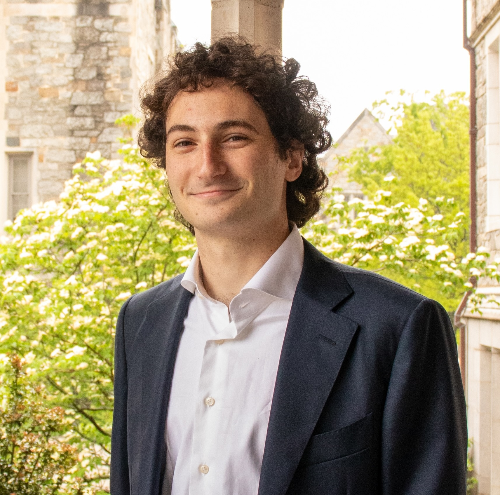

I'm a mathematical biologist interested in how ecological and evolutionary dynamics shape microbial communities. My work bridges theoretical modeling and computational analysis, with a focus on colonization resistance, consumer-resource dynamics, and host-phage coevolution.
I completed my B.S. in Mathematics and Biology at Boston College, where I worked in the Momeni Lab. I'm now a PhD student in the BEES program at the University of Maryland.
My undergraduate thesis and first-author publication examined how resource diversity and supply rates shape the ability of resident microbial communities to resist invasion. I developed a consumer-resource population model and analyzed how environmental parameters drive bifurcations in invasion outcomes, finding that both resource richness and supply rates are key determinants of colonization resistance.
I am developing computational models of host-phage coevolution, simulating how reciprocal selection pressures drive the diversification of bacterial hosts and their viral predators. This work combines differential equation modeling with phylogenetic tracking to characterize how coevolutionary dynamics produce diversity over ecological timescales.
Contributing author on work examining how spatial structure mediates the outcomes of population interactions in microbial communities, with implications for community assembly and stability in structured environments.
My approach to teaching grew directly out of my experience making mathematical biology accessible to broad audiences — a skill sharpened by years of explaining consumer-resource dynamics and invasion theory to collaborators across disciplines. I prioritize building intuition before formalism, and I adapt explanations to the learner's background rather than assuming a fixed entry point.
Staffed drop-in hours at the Math Learning Center, supporting students across courses ranging from introductory calculus through linear algebra, probability, and proof-writing. Working with students from diverse majors and preparation levels developed my ability to rapidly diagnose conceptual gaps and offer multiple explanatory framings of the same idea.
Also held private sessions with secondary students in algebra and precalculus, giving me experience calibrating explanations for learners at early stages of mathematical development — a skill directly relevant to broadening access to quantitative methods in biology.
Designed and delivered a preparatory geometry course for incoming high school students during COVID-19 restrictions. I built the curriculum from scratch, covering triangle similarity and congruence, area and volume, and introductory trigonometry. All instruction was conducted asynchronously via recorded lectures supplemented by daily live Zoom sessions.
This experience taught me that asynchronous formats demand unusually clear exposition — every ambiguity that a live instructor could catch in real time must instead be anticipated and resolved in the material itself. It also demonstrated the value of accessible digital tools for maintaining engagement and checking comprehension at a distance.
A recurring challenge in presenting mathematical biology is that equations cause many audiences — including scientists in adjacent fields — to disengage. I have developed seminar presentations for venues ranging from interdisciplinary biology symposia (Harvard Microbial Science Initiative, M3 Mid-Atlantic Microbiome Meet-up) to physics and data science audiences, consistently adapting technical depth and framing to the room.
This practice of translating between mathematical formalism and biological narrative is, I believe, central to effective graduate-level instruction in quantitative life sciences.
I believe quantitative reasoning is learnable by anyone willing to engage with it patiently — the bottleneck is almost never ability, but confidence and prior exposure. In my teaching I lead with geometric and biological intuition, only then layering in the formal machinery. I treat the moment when a student says "I've never thought of it that way" as the actual goal, not a byproduct.
I am particularly interested in developing pedagogical approaches that reduce the activation barrier for biology students encountering mathematical modeling for the first time — drawing on my own experience constructing models that needed to be legible to microbiologists, mathematicians, and physicists simultaneously.